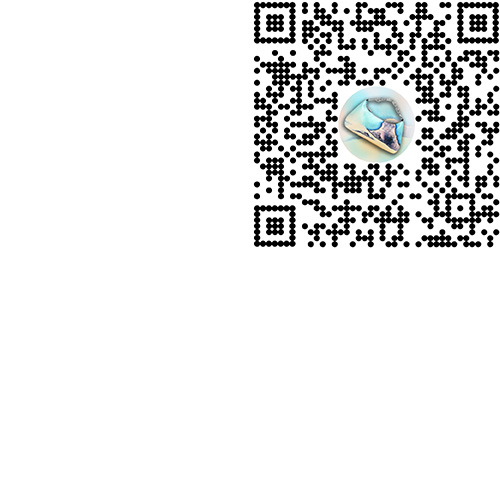

Danse Lente / SS21 in Nature
AR. Fashion (2021)
Drawing from collection notes by Danse Lente, this product-driven AR experience for the London-based accessory brand alludes to the essence of nature through the activation of immersive mist and audio effects. Bags and footwear from SS21 were modeled in 3D and translated into the AR space, interacting with the audience in a way that feels ephemeral and playful.
Concept, 3D and AR production / Helena Dong
🌬️ Try SS21 in Nature
AR. Fashion (2021)
Drawing from collection notes by Danse Lente, this product-driven AR experience for the London-based accessory brand alludes to the essence of nature through the activation of immersive mist and audio effects. Bags and footwear from SS21 were modeled in 3D and translated into the AR space, interacting with the audience in a way that feels ephemeral and playful.
Concept, 3D and AR production / Helena Dong
🌬️ Try SS21 in Nature